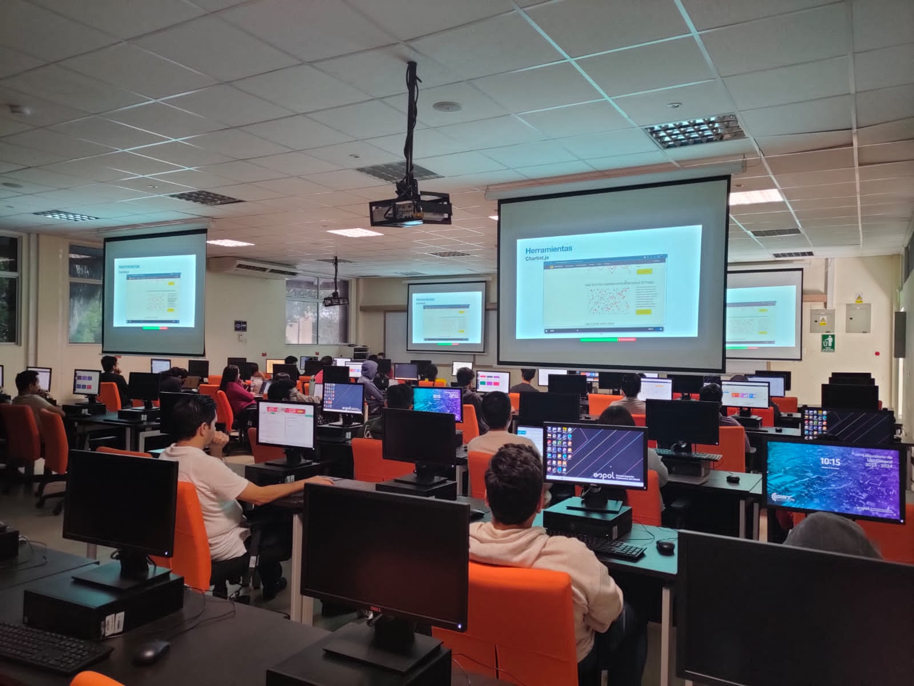

Inicio de la Ruta
Esta ruta de aprendizaje representa el recorrido de formación especializado en la toma de decisiones basada en datos, combinando metodologías de negocio con técnicas avanzadas de análisis de información. A lo largo del programa, se profundiza en el uso de Excel para la limpieza, modelado y estructuración inicial de datos; MySQL para la gestión, consulta y extracción eficiente de bases de datos relacionales; Python para el procesamiento automatizado, análisis estadístico y manipulación de grandes volúmenes de datos; y Power BI para el desarrollo de tableros interactivos, dashboards dinámicos y reportes ejecutivos de alto impacto, transformando datos complejos en estrategias de negocio efectivas.

Contexto de la Beca y Convocatoria
El programa fue impulsado por el Ministerio de Telecomunicaciones y de la Sociedad de la Información (MINTEL), tras un riguroso proceso de selección a nivel nacional que se extendió durante un mes. Como parte de esta iniciativa, los participantes seleccionados fuimos adjudicados con una beca valorada en $2,100 para acceder a una formación intensiva de ocho meses, orientada a potenciar competencias clave en el análisis de datos y la inteligencia de negocios.
Resumen de Módulos del Programa
| Módulo / Actividad | Tecnología / Herramienta | Duración | Estado |
|---|---|---|---|
| Procesamiento y Análisis Cuantitativo | Excel for Data Analytics | 1 mes | Aprobado |
| Gestión de Bases de Datos Relacionales | Database SQL and Querying | 1 mes 2 semanas | Aprobado |
| Análisis y Automatización de Datos | Python for Data Analytics | 2 meses | Aprobado |
| Visualización de Datos e Historias con Datos | Data Visualization | 1 mes | Aprobado |
| Inteligencia de Negocios y Tableros Control | Business Intelligence | 1 mes | Aprobado |
| Inteligencia Artificial Aplicada al Análisis | GenAI for Data Analytics | 1 mes | Aprobado |
| Desarrollo Profesional y Empleabilidad | CBM - Empleabilidad | 2 semanas | Aprobado |